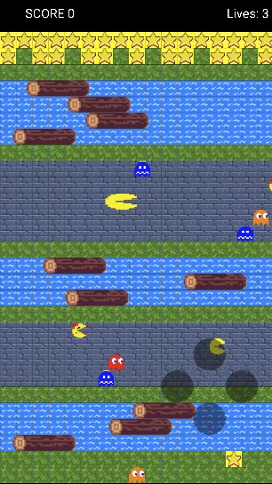

Frogger Game Project
An iterative and thorough implementation of the brain child of five Computer Science undergrads at Georgia Tech. We implemented this fully with Java and Android Studio. We followed a sprint format.
Details
In the fall of 2022, I embarked on an exciting journey to recreate the essence of the iconic game Crossy Roads. This project, developed in Java using Android Studio, was not just a programming exercise but a homage to the beloved arcade style. Over the course of four months, from August to December, my team and I dived deep into the world of game development, emerging with a thematic replica that not only honored the original's spirit but also pushed our understanding of what's possible in mobile game development.
Our development process was rooted in Agile methodologies, allowing us to adapt to challenges and iterate on our design effectively. This dynamic approach facilitated a collaborative environment where ideas could flourish and be refined through regular sprint reviews.
Agile Environment: By adopting Agile practices, we ensured that our project milestones were met with iterative progress, keeping the team focused and motivated throughout the development cycle. This approach allowed us to rapidly prototype, test, and refine our game mechanics, ensuring a polished end product.
Collaborative Ideation: The project was a testament to the power of collaborative ideation. Regular brainstorming sessions and peer reviews were integral to our workflow, enabling us to solve complex problems and incorporate innovative features that enhanced the gameplay experience.
One of the key challenges was designing a game loop architecture that was both efficient and capable of handling the dynamic elements of our game. Through meticulous engineering, we created a system that seamlessly integrated with Android Studio's capabilities, offering a smooth and engaging gameplay experience.
Dynamic Game Loop Architecture: The backbone of our game, the dynamic game loop architecture, was engineered to optimize performance and maintain a high frame rate, ensuring that the gameplay experience was fluid and responsive.
Java and Android Studio Integration: Utilizing the robust features of Java and the versatile development environment of Android Studio, we were able to implement complex game mechanics, such as character movement, obstacle generation, and score tracking, with precision and efficiency.
The project was not only a technical achievement but also a significant learning experience. We explored the depths of game development techniques, from the initial concept to the final deployment, gaining invaluable insights into the intricacies of developing for the Android platform.
Enhanced Gameplay: By leveraging Android Studio's capabilities, we enhanced the gameplay with features like dynamic obstacle generation, customizable characters, and interactive game environments, offering players an immersive experience.
Agile Project Management: The successful completion of this project underlined the effectiveness of Agile methodologies in game development. We learned the importance of flexibility, teamwork, and iterative progress in achieving project goals.
The Frogger Game project was a challenging yet rewarding endeavor that allowed us to showcase our technical skills and creativity. It stands as a testament to our dedication to learning and excellence in software development, particularly in the realm of mobile gaming.
Image Gallery
 Loading Screen.
Loading Screen.
 Environment
Environment

One map.